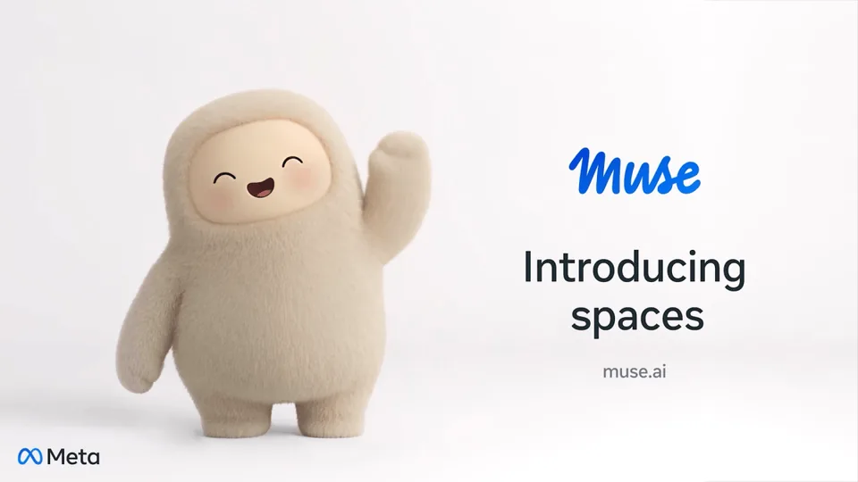
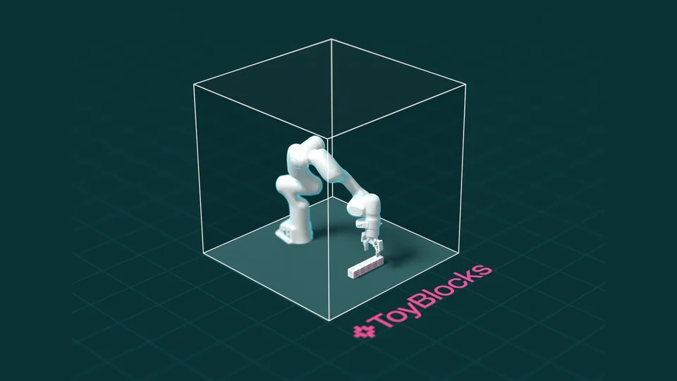
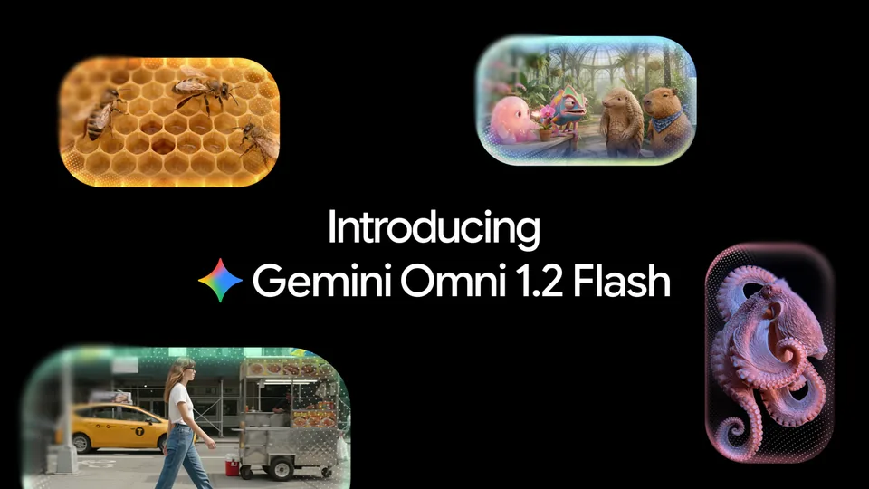
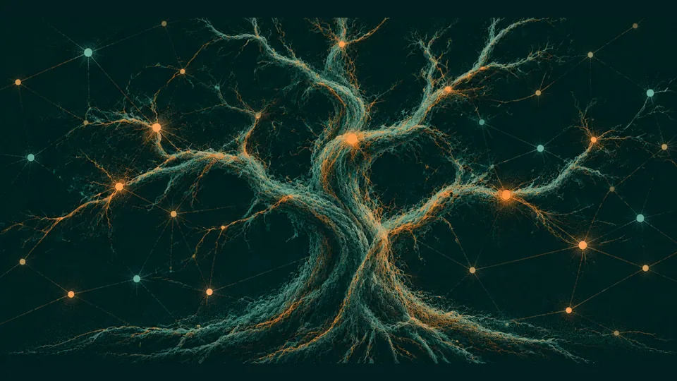

릴스 보고 오셨군요. 반갑습니다, SHIFT 편집부입니다.
방금 보신 영상의 기사 전문과 오늘 올라온 기사를 아래에 모아 두었습니다.
내 직무에 맞는 AI
FREE TOOLS
도구 26개 전체 보기 가입 없이 바로 쓰는 무료 도구
설치·가입 없이 바로 씁니다. 넣은 파일은 밖으로 나가지 않습니다.
HOW-TO
튜토리얼 45편 전체 보기 따라만 하면 되는 튜토리얼
단계마다 복사해서 쓰는 프롬프트가 붙어 있습니다.
입문Claude클로드로 만드는 애니메이션 스타일 10가지, 프롬프트 모음STEP 12 · 영상·이미지입문Claude Code · Claude유튜버·크리에이터가 깔아 두면 좋은 AI 스킬 7개, 내 말투 학습·훅·썸네일·영상 제작까지STEP 8 · 스킬·MCP중급Claude Code · Claude연구자·대학원생이 깔아 두면 좋은 AI 스킬 7개, 문헌 조사·통계·논문 쓰기·동료 평가까지STEP 8 · 스킬·MCP입문ChatGPT · 제미나이AI 이미지로 상세페이지·썸네일 시안 만들기, 올리기 전 표시와 저작권 확인까지 6단계STEP 6 · 영상·이미지
AI NEWS
최신 기사 AI 뉴스 88개 전체 보기 오늘의 AI 뉴스
원문을 확인하고, 써볼 만한지 판정합니다.

모델·제품지켜보세요메타 뮤즈 스페이스, 말로 앱을 만든다11월 8일
연구지켜보세요Ai2 토이블록스, 로봇 학습 시험장11월 8일비즈니스·일자리지켜보세요아마존 알렉사, 문자로 쇼핑한다11월 8일
모델·제품지켜보세요제미나이 옴니 1.2 플래시, 15초 영상11월 7일연구지켜보세요
METR, 앤트로픽 개발 속도 2배 추정
METR이 11월 5일(미국 시각) 앤트로픽의 AI 연구개발 속도를 독립적으로 평가한 보고서를 냈습니다. 2026년 10월 기준 AI 능력 향상 속도가 이전보다 약 2배 빠르다고 보지만 핵심 증거 대부분은 앤트로픽이 가렸습니다.
연구
과학자는 클로드를 어디에 쓰나
앤트로픽이 11월 5일(미국 시각) 연구자들이 클로드를 어떤 과학 작업에 쓰는지 분석한 글을 냈습니다. 2026년 8월 2일부터 9월 30일까지 세션 207,049개 가운데 데이터 분석이 가장 많았고 가설 세우기는 4.2%였습니다.

보안·안전
ARTEX 노출 서버 1,465대 확인
센시스(Censys)가 11월 5일(미국 시각) AI가 스스로 침투 시험을 수행하는 오픈소스 도구 ARTEX의 관리 화면이 열려 있는 서버 1,465대를 찾았다고 밝혔습니다. 한국 금융사 공격에 쓰인 도구입니다.
모델·제품지켜보세요
메타 뮤즈 스페이스, 말로 앱을 만든다
메타가 11월 6일(미국 시각) 뮤즈(Muse) 앱에 '스페이스'를 추가했습니다. 만들고 싶은 화면을 말로 설명하면 뮤즈가 만들어 주며, 뮤즈가 제공되는 모든 곳에서 오늘부터 쓸 수 있습니다.